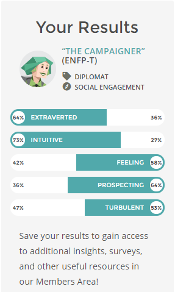
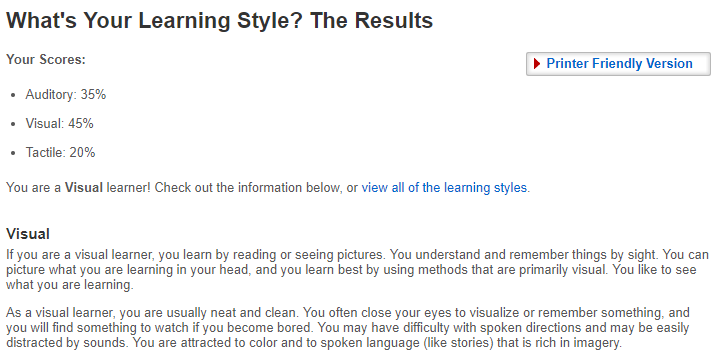
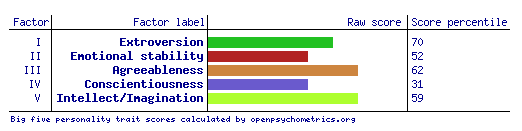

Ideal Job
My ideal job would revolve around a small team enviroment with a focused goal but minial supervision,
leaving room for my own creativity in solving problems and implementing solutions.
Seek link - https://www.seek.com.au/job/36902485?type=promoted


The Appeal
The job is placed for a new games studio who have yet to release their first game but cureently have one under works.
To raise revenue they are designing systems for mining companies so the position is to aid in the odd jobs
then assist in creating games. What makes this position particularly appealing to me is the size of the studio and
room for freedom. A small team means plenty of shared ideas and discussions about the direction of the game which
is a aspect of a company that I hope to have when I find a job.
The Qualifications
This job requires a fully qualified programmer who knows there way around game making software such as Unity. They also require
knowledge in javascript and HMTL and Github operations. This is understandable due to the size of the company
as to be a valuable member one must know how all aspects operate. There is simply too little employees
for each person to have a specilized task. Furthermore, they are looking for someone who can make desicions and implement them.
Therefore, high level of experience is needed and no trainning will be offered.
My Current Qualifications
I currently have very little experience in terms of coding and desicion making in a project. I have attempted to
construct games myself and have left them behind due to lack of direction and planning. Thus, improvising for this company
will be time consuming and is something I will need to work on. I will also need to broaded my skills in other languages
and IDE's as I only know Unitys features a little C# coding knowledge.
My Plan
As of right now, my plan to gain these qualifications is to continue to experiment with Unity and its tools. My programming
languages have similar syntax and functions. Thus, if I continue to practise with C# and finish my own projects, my current understanding
will only grow. As for experience, I will try to get hired in an entry level position or voulenteer in an IT enviroment. However, I would rather work on my own projects
and present them as my experience.
Myers Briggs Results

Type of Learner

Big Five Inventory

The results of these tests reveal that I am capable of working with others on projects. In addition,
listening and comprehending absract ideas from others is one of my strong points. However, I
am not afraid to question the status quo or distribution of power which may become a problem
if handed a task I do not feel confident in doing. Although, I believe the tests are just guidelines
and in general I will work well in group.